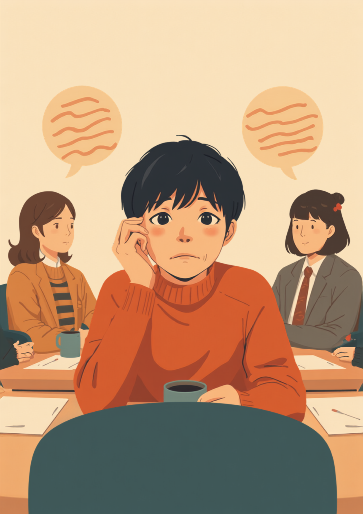

聴力検査を受けても異常はないのに、職場の指示や電話の声だけがうまく聞き取れない。そんな困りごとは、聴覚情報処理障害（APD）や聞き取り困難症（LiD）と呼ばれる特性が関係していることがあります。「サボっている」「集中力がない」と誤解されやすい一方で、本人は毎回の聞き返しに罪悪感を抱えていることも少なくありません。この記事では、聞こえているのに分からないもどかしさと、職場での伝え方、使える工夫を当事者の声をもとに整理しました（2026年7月時点の情報です）。
PR



誰かが話しているのは分かる。でも、何を言っているのかがつかめない
音は聞こえているのに、言葉として分からない

聴覚情報処理障害（APD）や聞き取り困難症（LiD）は、耳そのものの機能ではなく、音を言葉として処理する段階でつまずきが起きている状態だと考えられています。聴力検査で異常が出ないぶん、周りにも本人にも気づかれにくいんです。まめざる
就労支援の現場で話を聞いていると、「耳は悪くないと言われるのに、指示だけが聞き取れない」という相談に出会うことがあります。聴覚情報処理障害（APD）や聞き取り困難症（LiD）は、音自体はちゃんと耳に届いているのに、それを言葉として脳が処理する部分でうまくいかないことがある特性だとされています。耳鼻科で聴力検査を受けても「異常なし」と言われることが多く、そのぶん本人も「気のせいなのかもしれない」と自分を疑ってしまいやすいようです。
職場では、「これ、〇〇しといて」の肝心な部分だけが聞き取れなかったり、名前を呼ばれても気づかず無視したように見えてしまったりすることがあります。何度も聞き返すうちに、相手を不快にさせているのではという不安が積み重なっていく、という声もよく聞きます。
!
聞き取りづらさの背景には、APDのほかにも発達特性や聴力そのものの問題など、さまざまな要因が考えられます。この記事の内容がそのまま当てはまるとは限らないため、気になる症状がある場合は自己判断せず、耳鼻咽喉科などの専門医に相談することをお勧めします。
「飲食店でホールのバイトしてるんですけど、正直言うと、注文の聞き取りがずっと苦手でした。厨房がガチャガチャしてる時とか、複数人のテーブルで一気に喋られると、もう『これ○○○して〜』の○○○の部分が丸ごと消えるんです。最初の半年くらいは聞き返すたびにお客さんに変な顔されるのが怖くて、分かったふりして厨房に適当に伝えて、普通に間違えて怒られてました。今は指で数を示してもらったり、復唱して確認するようにしてるんですけど、それでも忙しい時間帯は無理な日もあります。」
20代・女性（聴覚情報処理障害の疑い・飲食店ホール）
静かな場所なら平気なのに、職場だと急に聞き取れなくなる理由
APDやLiDのやっかいなところは、いつも聞き取れないわけではないという点です。静かな部屋で1対1の会話をしているぶんには、まったく問題なく聞き取れることが多いようです。ところが雑音が混ざったり、複数人が同時に話したり、電話越しの声になったりすると、途端に聞き取りづらさが強くなる傾向があるとされています。この「できるときとできないときの差」が、周囲から「さっきは普通に話せてたじゃん」「気分次第なのでは」と誤解される原因のひとつになっているようです。
「できるとき」と「できないとき」の差が、誤解を生みやすい
特に電話対応は、声のトーンや周囲の雑音がそのまま聞き取りづらさに直結しやすい場面のひとつです。相手の姿が見えず、口の動きなど視覚的な手がかりも使えないため、余計に聞き取りにくくなるという声もあります。会議も同様で、1対1なら平気でも、複数人が入れ替わりで発言する場になると、誰が何を話しているのかを追いきれなくなることがあるようです。
「営業事務やってて、電話取るのが一番きついです。正直、電話が鳴った瞬間に軽く動悸するくらい。会社名とか名前を一回で聞き取れたことがほとんどなくて、毎回『恐れ入ります、もう一度お願いできますか』って言うんですけど、3回目くらいになると相手の声のトーンが変わるの、分かるじゃないですか。あれがめちゃくちゃ苦手で、入社して1年くらいはトイレに逃げ込んで折り返すようにしてました。今は電話に出る前に一呼吸置いて、聞こえた部分だけでも復唱するようにしてます。完璧には程遠いですけど。」
30代・男性（聴覚情報処理障害の疑い・営業事務）
聞き返すことへの罪悪感と、職場への伝え方
APDやLiDのある方の多くが口にするのが、「また聞き返してしまった」という罪悪感です。一度や二度なら気にならなくても、それが毎日何度も続くと、「自分は迷惑をかけている」という感覚が積み重なっていきます。相手が悪気なく「さっきも言ったよね」と返してくると、それ以上聞き返せなくなり、分からないまま作業を進めてミスにつながってしまう、という悪循環に陥りやすいようです。
i
聞き返し方を少し工夫するだけで、相手に与える印象が変わることがあります。「え？」と聞き返すより、聞こえた部分を復唱しながら確認する方法のほうが、相手も答えやすいと感じるケースが多いようです。
聞き返し方を変えてみるという考え方
- 「サラダのご注文でしたか？」など、聞こえた部分を復唱して確認する
- 「電波が悪いようで」と、自分の特性を説明せずに聞き返す方法を持っておく
- 数や日時は、指で示してもらう・チャットで送ってもらうようお願いする
- 口頭指示のあとに「念のため、要点をメモで送ってもらえますか」と確認する
聞き返すことは、サボりでも甘えでもありません。分からないまま進めて後で大きなミスになるより、その場で確認するほうが、結果的にはお互いのためになることが多いんです。まめざる
職場への伝え方としては、症状の詳細をすべて説明する必要はないとされています。業務に関わる具体的な場面に絞って、「こうしてもらえると助かる」という形で伝える方法が負担が少ないようです。
相談の一コマ
相談者
電話を取るのがずっと怖くて。何度も聞き返すうちに、周りにも変な人だと思われてる気がして、どう説明したらいいのか分からないんです。

まめざる
それはつらいですね。まず、症状の名前や仕組みを詳しく説明しなくても大丈夫なんです。「電話は静かな場所に移動してから対応させてください」のように、場面を絞って伝える方法もありますよ。
相談者
場面だけ、でいいんですか？なんだか自分の困りごとをちゃんと伝えられていない気がして、逆に不安になります。
まめざる
全部を分かってもらおうとしなくて大丈夫です。「指示は口頭だけでなくメモも欲しい」など、できることから一つずつ伝えていけば、周りの対応も少しずつ変わっていくことが多いですよ。
使える工夫と、一人で抱えないための相談先
今日から試せる工夫
APDやLiDそのものを治す方法として確立されたものは、2026年7月時点ではまだ確立されていないとされています。一方で、環境を調整したり、道具を活用したりすることで負担を減らせる場合があります。
- ノイズキャンセリングイヤホンで、余計な雑音を減らす
- 会議はボイスレコーダーで録音し、あとで聞き直せるようにする
- リアルタイム字幕アプリや音声文字変換ツールを併用する
- 指示はメール・チャットなど、視覚的に残る形でもらえるよう依頼する
相談できる窓口
- 耳鼻咽喉科（聴力検査、APD・LiDに詳しい医療機関の紹介）
- 職場に選任されている産業医（50人以上の事業場に選任義務あり）
- 就労移行支援事業所（職場での配慮の整理や、働き方の相談）
- 同じ特性を持つ人たちの当事者会・ピアサポート（体験談や工夫の共有）
聞き取りづらさの原因や、必要な配慮の内容には個人差があります。この記事の内容がそのまま当てはまるとは限らないため、実際の判断は医療機関や支援者とよく相談しながら進めることをお勧めします（2026年7月時点の情報です）。
聞き返すことは、甘えでも能力不足でもありません。「できるとき」と「できないとき」があるからこそ、具体的な場面を絞って伝えることが、自分を守る一歩になります。
よくある質問
Q. 聴覚情報処理障害（APD）は病気ですか、診断はできますか？
APD（聴覚情報処理障害）やLiD（聞き取り困難症）は、通常の聴力検査では異常が見つからないにもかかわらず、日常生活で聞き取りづらさを感じる状態を指すとされています。単一の病名として明確に診断できるものではなく、研究や理解が発展途上の分野だと言われています。気になる症状がある場合は、まず耳鼻咽喉科で聴力検査を受けることをお勧めします（2026年7月時点の情報です）。
Q. 聞こえているのに聞き取れないのはなぜですか？
音そのものは耳に届いていても、脳が言葉として処理する段階でうまく変換できていない状態と考えられています。静かな場所での1対1の会話は問題なくできても、雑音がある環境や複数人での会話になると急に聞き取りづらくなる、という特徴を持つ方が多いとされています。
Q. 職場でどう配慮をお願いすればいいですか？
症状のすべてを説明しようとせず、業務に関わる具体的な場面に絞って伝える方法が助けになる場合があります。「指示は口頭だけでなくメールやチャットでもいただけると助かります」「電話対応は静かな場所に移動してから対応させてください」など、具体的にお願いすると伝わりやすいとされています。
Q. どんな仕事が向いていますか？
一概には言えませんが、静かな環境で一人作業が中心の仕事や、メール・チャットなど視覚情報でのやり取りが多い仕事は選択肢の一つとされています。電話対応が多い職場やにぎやかな環境は負担になりやすい傾向があるようですが、環境が整ったコールセンターなどで働きやすいと感じる方もいるため、向き不向きは個人差が大きい点にも注意が必要です。
Q. 聞き返すことに罪悪感を感じてしまいます。どうすればいいですか？
聞き返すこと自体は悪いことではないとされています。「え？」と聞き返すより、聞こえた部分を復唱して「〇〇についてですね？」と確認する方法だと、相手に与える印象が和らぐ場合があるようです。それでも聞き返しづらいときは、後でメールやチャットで内容を確認できるようお願いする方法もあります。
この5点を頭に置いておくだけで、少し気持ちが軽くなるかもしれません
PR


一人で抱え込む前に、今の気持ちを話してみませんか
「まだ迷っている」段階でも大丈夫です。mimemimeの無料相談は、今の状況の整理から一緒に始められます。
無料で話してみる
おのざる
mimemime代表。就労支援の現場経験をもとに、障がいのある方の働く不安に寄り添う記事を執筆。